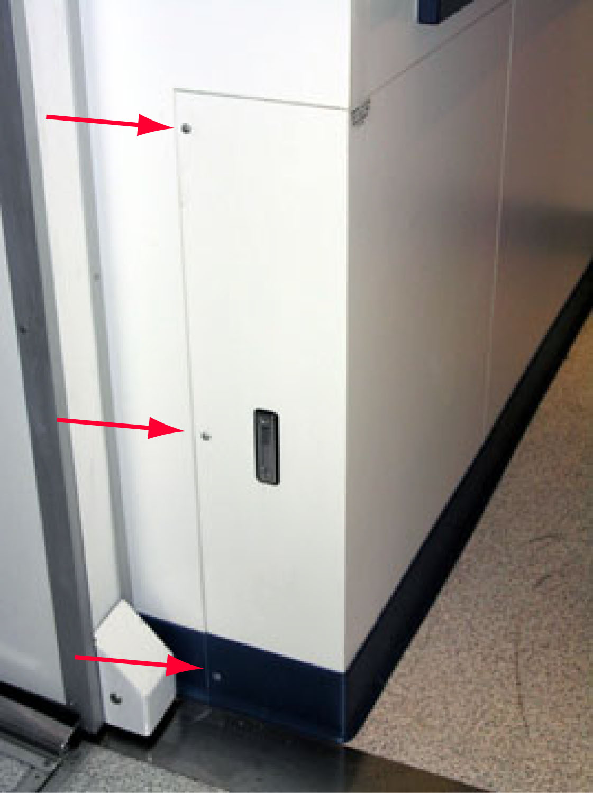

Illustration 1: Access Panel - View from Room Doorway

| NOTE: | The distance between the Table base cover and the wheel well access panel is only 533 mm (21”). With the cover and access panel removed, the distance increases to 749 mm (29.5”). |
Illustration 1: Access Panel - View from Room Doorway
Illustration 2: Access panel - End View with Screws
